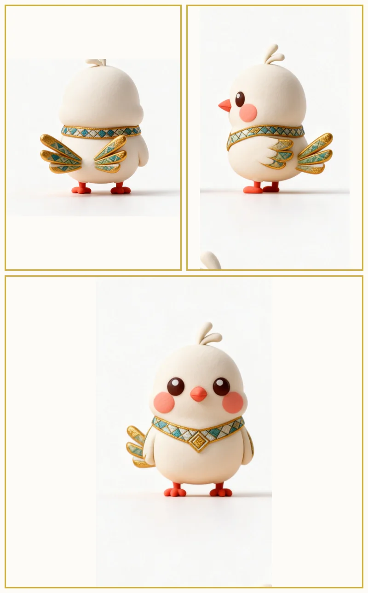

三视图3 Views甘米米 Ganmimi
文化信使 · 故事收藏家Culture Messenger
黎锦上最古老的两枚纹样Two of the oldest motifs in Li brocade
甘米米与呱噜噜，一只把故事带向世界，一只把世界织进家乡。原型取自黎族「甘工鸟」与「蛙图腾」——它们是黎锦上最古老的两枚纹样，也是海南人对爱与家园最深的执念。下面从原型、性格、起源三个角度认识这对出海双人组。Ganmimi and Gualulu — one carries stories to the world, the other weaves the world back home. They spring from the Li people's sacred Gan Gong Bird and Frog totem, two of the oldest motifs in Li brocade, and Hainan's deepest emblems of love and home.

三视图3 Views文化信使 · 故事收藏家Culture Messenger
 三视图3 Views
三视图3 Views雨林守护者 · 家园守望者Rainforest Guardian

基于双 IP 定稿三视图生成的 3D 建模（500k 面）。拖拽旋转、滚轮缩放，随时复位——也可以去「IP 产品」把它们带回家。Generated from the duo's final three-view sheets (500k faces). Drag to rotate, scroll to zoom, reset anytime — or take them home in the IP Store.
黎族传说里，一位美丽的黎家少女与青年猎手相爱，却被恶势力拆散。少女坚贞不屈，化作一只神鸟，昼夜啼鸣"甘工、甘工"，守护爱与家园——这就是黎锦上最美的纹样"甘工鸟"。甘米米是它的后代化身，决定飞出海南，把家乡的 1001 个故事讲给世界听。呱噜噜留守工坊："你讲给世界听，我织给家乡看。"
In a Li legend, a young girl turned into the sacred Gan Gong Bird, singing day and night to guard love and home — the most beautiful motif in Li brocade. Ganmimi is her descendant, flying out from Hainan to share 1001 stories with the world. Gualulu stays home: "You tell the world; I weave it into home."